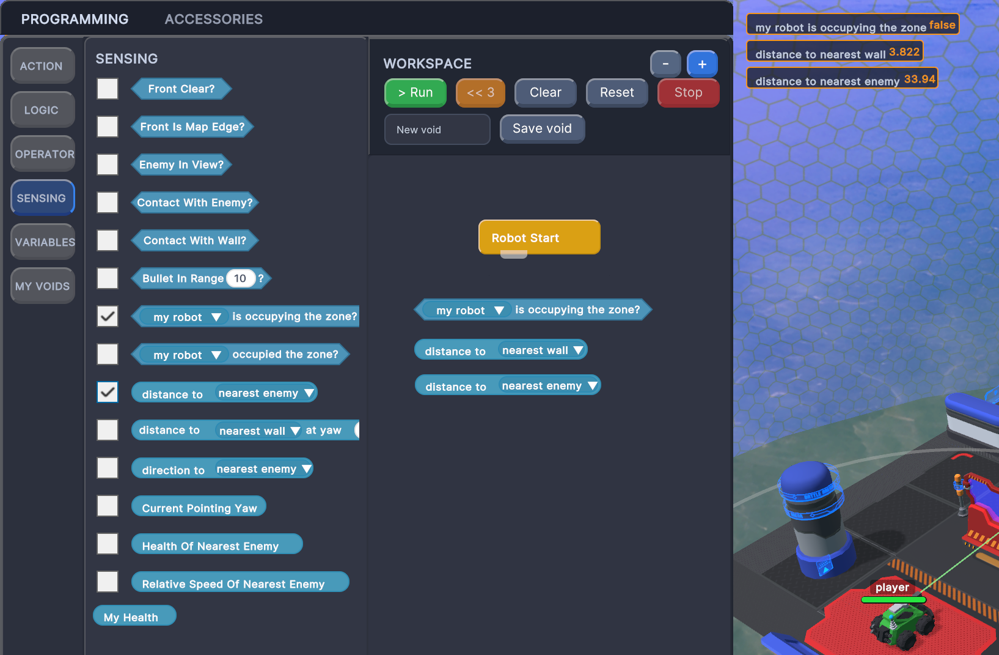
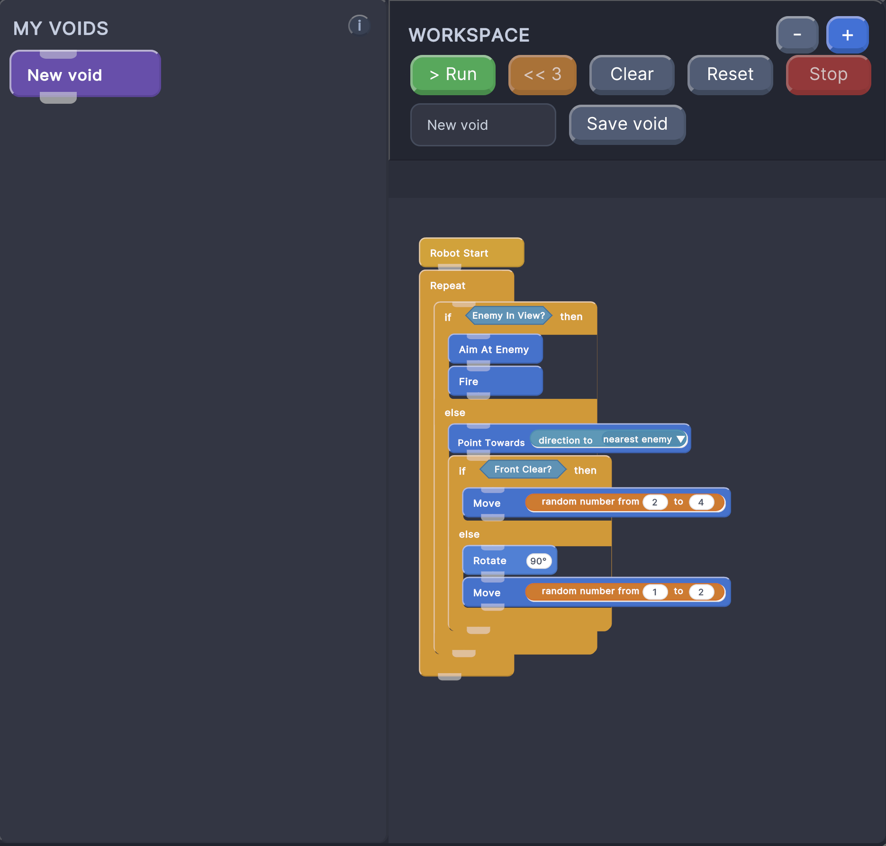
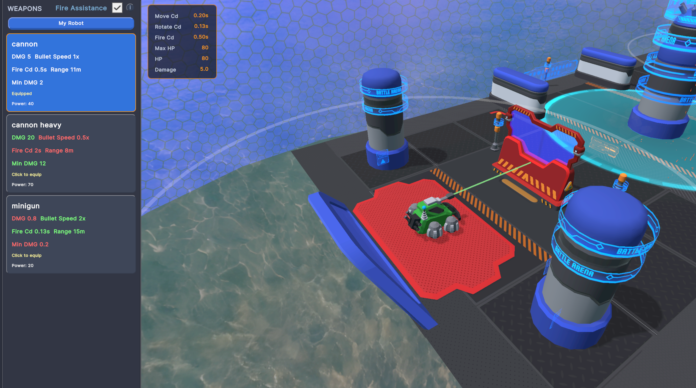
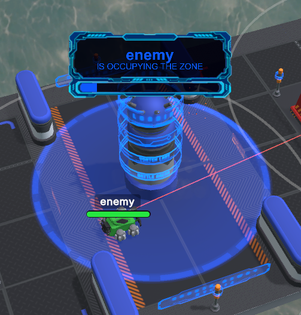
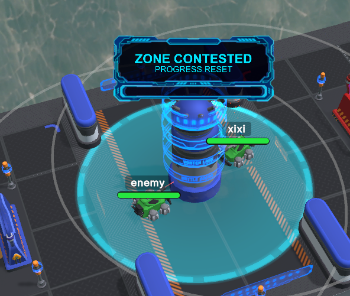

This guidance is for players who are new to Robot Arena. It is not a full block catalog.
Instead, it focuses on rules that are easy to miss in the UI: yaw angles, event priority,
sensing monitors, rollback, accessory unlocks, capture zone logic, and match resolution.
Hover over accessory cards or blocks to see descriptions, return values, default parameters,
and equipment requirements. Many answers to “why can’t I use this block?” or “does this sensing
block return true/false or a number?” are hidden in hover tooltips.
Before Running
Check equipment and Power
Some action blocks require matching accessories before they unlock. If your Power exceeds the limit,
the program will not start. The monitor in the top-left of the Accessories page shows Move Cd,
Rotate Cd, Fire Cd, Max HP, HP, and Damage.
Debugging
Use monitors and rollback
Turn on monitors for key sensing blocks, then use << 3
to return to the moment before a mistake and edit the logic. It is much faster than restarting blindly.
01 / Blocks
Block Programming
Once you understand these rules, your strategy becomes a debuggable robot program instead of a pile of blocks.
Yaw is an absolute world angle, not just “turn left or right”
Some reporters and actions use absolute world yaw: 0-360 degrees in the arena coordinate system.
Be careful to distinguish Rotate 90
from Point Towards 90.
Robot StartRotate 90Point Towards 90
Rotate takes a relative rotation angle: how many degrees to turn from the current heading.
Point Towards takes an absolute world yaw: the exact direction to face. In other words,
running Rotate 90 twice accumulates two turns; running Point Towards 90 twice usually changes
nothing the second time.
Combining Direction To nearest enemy
with Point Towards lets the robot dynamically face an enemy, a wall, or the map center, because
Direction To also returns an absolute yaw.
Sensing blocks can show monitors
Some sensing blocks return true/false, while others return numbers. You can enable their monitor
in the palette to display live values during the match. If a sensing block has dropdown options,
and the workspace contains the same sensing block with different options, enabling the monitor
will show multiple monitors, one for each option.
Distance To enemy12.4
Distance To wall3.1
Direction To center274
Distance To enemyDistance To wallDirection To map center

SENSING palette monitor toggles with live sensing monitors visible during debugging.
The three conditions behind Enemy In View?
Enemy In View? does not simply mean “the enemy is on screen.”
It is true only when all of these conditions are met:
The enemy is within 100m.
The enemy is within ±45 degrees of the robot’s forward direction, forming a 90-degree cone.
If the robot fired now, the bullet path to the enemy would not be blocked by a wall or obstacle.
Therefore, it returns false if the enemy is close but behind you, or if the center wall blocks
the direct firing line. A common pattern is to check Enemy In View?
before running Aim At Enemy
and Fire.
Priority blocks are an interrupt system
When condition P=2
runs the chain below it when its condition triggers. It is not a normal if block; it is an event.
It can interrupt the main chain, and it can also interrupt lower-priority event chains.
Higher P values mean higher priority.
After the high-priority event chain finishes, execution returns directly to Robot Start.
It does not resume at the block after the interrupted block. This makes events great for emergency
reactions such as dodging bullets, escaping the map edge, or pushing back when touching the enemy.
Do not put every normal behavior into events, or the main chain will be reset constantly.
Custom void: save the current main chain as a reusable action
When you save a void in MY VOIDS, the game saves the logic currently connected from
Robot Start in the workspace, including blocks nested
inside loops and conditions. After saving, a
Call Void name
block appears and can be reused in the main program or other branches.
Treat voids as tactical action snippets: briefly routing around a wall, aligning before capture,
or executing an attack sequence after the enemy enters view. Avoid recursive self-calls; recursive
calls are skipped at runtime to prevent infinite nesting.

MY VOIDS saves the connected chain from Robot Start as a reusable void.
Rollback: use << 3 to edit just before the mistake
Press << 3 while the program is running, and the game will try
to return to the match moment from three blocks earlier. After rollback finishes, you can edit
the block program. The rollback point turns pink, marking it as the resume anchor.
Robot StartMove 2Point Towards 180Fire
The pink rollback point cannot be deleted. When you click Run again, the program does not restart
from the initial Robot Start state. It resumes from the match moment represented by the pink anchor,
preserving robot positions, enemy position, and remaining time from that rollback point.
If the target rollback point is near a fall or another unsafe state, the game will look for a safer
runnable rollback point. If it cannot find one, it will report that rollback is unavailable.
Export / Import: share and test strategies
Stop the program, then click IM/EXPORT in the top-right corner.
export saves the current block design as JSON. import for my robot imports a JSON
strategy for your robot. import for enemy imports it for the enemy, which is useful for
matchup testing.
Use clear file names for exported JSON, such as zone-control-v2.json.
Make sure the current program is stopped before importing so you do not modify state mid-run.
Use IM/EXPORT to save your strategy JSON or load it for either robot.
02 / Accessories
Accessory System
Accessories affect speed, health, weapons, special abilities, and whether some action blocks are usable.
WHEELS
Movement and turning
Wheels accessories control Move Cd and Rotate Cd. Lower values mean faster movement and turning.
Equipping any wheels accessory enables Move,
Rotate, and
Point Towards.
WEAPONS
Damage, bullet speed, range, and fire cooldown
Weapon accessories unlock Fire,
Aim At Enemy, and
Aim At angle.
Turning on Fire Assistance enables the weapon range display and laser aim line, which are
useful for debugging range and bullet paths.
ARMOR
Health
Armor increases Max HP and does not directly unlock new blocks. Heavier armor improves forgiveness,
but it consumes Power, so it must be balanced against weapons and mobility.
SENSOR
Sensing and reporters
Radar accessory tooltips mark it as unlocking sensing and reporter-style blocks, such as distance,
direction, health, contact, bullet range, and capture-zone state readings. In the current version,
these sensing blocks can still be placed in the workspace, but players should treat radar as the
main entry point for reading the environment and use monitors to debug live values.
SPECIAL
Bouncer
Bouncer unlocks Activate Bouncer.
When activated, it applies radial knockback to nearby enemies. The effect weakens with distance,
has a cooldown, and is skipped while on cooldown. It is useful for pushing enemies out of the
capture zone, toward the map edge, or out of close-range pressure.
SPECIAL
Freezer
Freezer unlocks Activate Freezer.
When activated, it applies a temporary slow effect to enemies within range and also has a cooldown.
It pairs well with chasing, capture-zone defense, and avoiding enemy rams.
RANGE
Projectile range & linear damage falloff
Every weapon defines a max range (meters) and a linear falloff curve.
Within the falloff start distance, bullets deal 100% base damage. Beyond that,
damage decreases linearly with distance traveled — the farther the shot, the less it hurts.
At max range, damage reaches a configurable minimum multiplier
(e.g., 20%). If maxRange is 0, the weapon has no range limit
— bullets never expire from distance and always deal full damage. This system rewards closing the gap
and makes long-range sniping ineffective unless the weapon is built for it.
Check weapon stats in the Accessories tab to understand each weapon's effective engagement envelope.

Fire Assistance shows the weapon range circle and laser aim line for tuning attacks.
03 / Capture Zone
Capture Zone
The center zone is a one-time objective: once captured, the other side cannot take it back.
1
One robot enters the center capture area while the opponent is outside the capture area.
2
If it stays alone for more than 5 seconds, the capture succeeds.
3
If the opponent enters the capture area during that time, the capture attempt fails and progress resets.
4
Once either side completes the capture during the match, ownership is locked and cannot be stolen.

Solo occupation builds capture progress.

When both robots enter the zone, the capture attempt is contested and progress resets.
04 / Winning Condition
Winning Condition
Resolution order matters: death first, capture second, then damage comparison.
1
If one side dies, the opponent wins
A robot can die from bullet damage, or by being pushed off the map edge, or by driving off the edge itself.
If both robots die at the same time, the match is a draw.
2
If both survive, check capture
If either side has successfully captured the zone and both robots are still alive, the capturing side wins.
3
If nobody captured, compare damage
If neither robot died and nobody captured the zone, the side that dealt more damage wins.
Equivalently, the side that took less damage wins.
4
If damage is equal, draw
If neither side lost health, or both sides lost the same amount of health, the match is a draw.